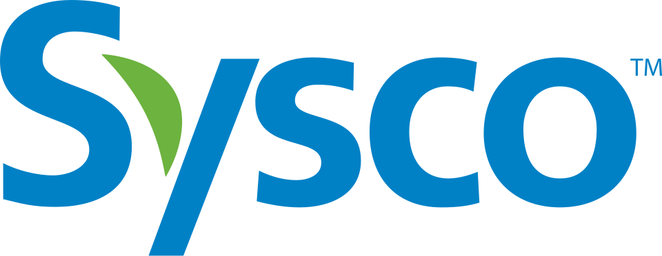

Sysco
Sysco는 식품을 음식점, 의료·교육 시설, 스포츠 경기장 등 급식이 이루어지는 장소에 판매·마케팅·유통하는 기업이다. 식품 서비스용 소모품과 장비도 공급한다.
최종 업데이트

Sysco는 어떤 브랜드인가
회사는 음식점과 의료·교육 시설, 스포츠 경기장 등 다양한 고객에게 식품을 공급한다. 식품뿐 아니라 식품 서비스에 필요한 소모품과 장비도 판매한다.
세계 최대의 종합 식품 유통기업으로 평가된다. 2024년 6월 기준 약 76,000명의 직원이 730,000개 고객 사업장을 지원한다.
또한 10개국에서 340개 유통센터를 운영한다. 2024년 미국 기업을 총매출 기준으로 평가한 Fortune 500에서 54위를 기록했다.
Sysco는 어떻게 시작되고 성장했나
1966년 Zero Foods 소유주 John F. Baugh가 다른 식품 유통기업 8곳의 경영진에게 대규모 기업 설립을 제안했다.
합의에 참여한 9개 회사는 1969년 5월 Sysco를 설립했으며, 창업자는 Herbert Irving, John F. Baugh, Harry Rosenthal이다.
합병 당시 9개 회사의 총매출은 약 US$115 million이었다. 회사는 1970년 3월 기업공개를 진행하고 같은 해 Arrow Foods Distributor를 처음 인수했다.
1970년부터 1980년까지 소규모 식품 유통기업 25곳을 인수하며 성장했다.
Sysco의 브랜드 아이덴티티는 무엇인가
대규모 유통센터망을 기반으로 식품과 식품 서비스용 소모품·장비를 여러 급식 현장에 함께 공급하는 종합 유통 구조가 특징이다.
Sysco의 대표 제품과 서비스는 무엇인가
회사의 중심 사업은 급식과 외식 현장에 필요한 식품을 판매하고 마케팅하며 유통하는 일이다. 주요 고객은 음식점, 의료시설, 교육시설, 스포츠 경기장과 그 밖의 식품 제공 장소이다.
식재료 외에도 식품 서비스용 소모품과 장비를 판매한다. 배송 차량을 확충하고 식품 보관용 냉장 창고를 건설해 유통 기반을 확대했다.
캐나다, 아일랜드, 영국 등의 식품 유통기업을 인수하며 공급 지역과 고객 기반을 넓혔다.
Sysco는 지금 어떤 상태인가
본사는 미국 휴스턴의 Energy Corridor 지구에 있다. 2024년 6월 기준 직원은 약 76,000명이며, 10개국의 340개 유통센터를 통해 730,000개 고객 사업장에 서비스를 제공한다.
2019년에는 Brakes 인수를 바탕으로 Sysco GB를 구성해 영국 시장에 진입했다.
Sysco 로고는 어떻게 변해왔나
자주 묻는 질문
Sysco는 어느 나라 브랜드인가요?
Sysco는 미국의 식음료 브랜드입니다.
Sysco는 언제 설립되었나요?
Sysco는 1969년 설립되었습니다.
Sysco의 브랜드 아이덴티티는 무엇인가요?
대규모 유통센터망을 기반으로 식품과 식품 서비스용 소모품·장비를 여러 급식 현장에 함께 공급하는 종합 유통 구조가 특징이다.
Sysco의 대표 제품은 무엇인가요?
회사의 중심 사업은 급식과 외식 현장에 필요한 식품을 판매하고 마케팅하며 유통하는 일이다.
Sysco의 본사는 어디에 있나요?
본사는 미국 휴스턴의 Energy Corridor 지구에 있다.
Sysco의 창업자는 누구인가요?
Sysco의 창업자는 Harry Rosenthal, Herbert Irving, John F. Baugh입니다(위키데이터 기준).
Sysco의 공식 웹사이트는 어디인가요?
Sysco의 공식 웹사이트는 https://www.sysco.com/ 입니다.
출처와 검증
Sysco 관련 참고: 공식 웹사이트 · 위키데이터 Q2376711 · 영어 위키백과. 브랜드명은 한글과 원어를 함께 표기하되 데이터에 없는 표기는 만들지 않습니다. 기원 국가·설립연도는 검수된 정의문에서 확인된 값을 우선하고, 없을 때만 공식 웹사이트 URL이 일치하는 위키데이터 개체의 값을 씁니다. 위키데이터 값은 2026-09-12 기준입니다.